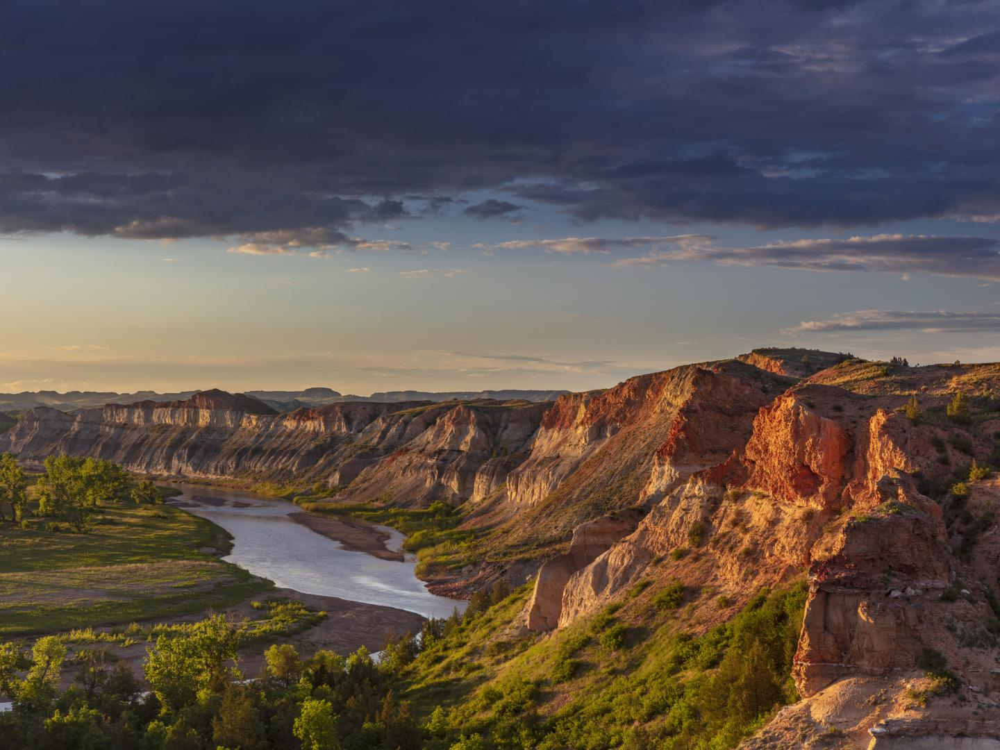
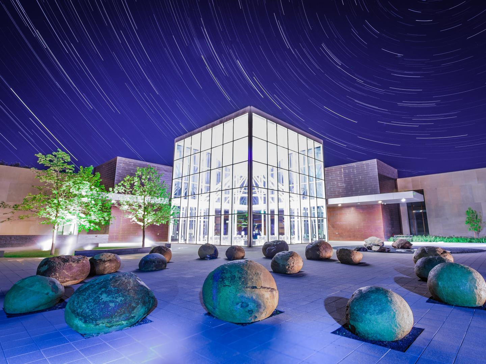

-
꼭 가봐야 할 곳

시어도어 루스벨트
국립공원
미국 제26대 대통령으로 취임하기 전 시어도어 루스벨트는 수년간 이곳에서 거주한
환경 보호 활동가이자 카우보이였습니다. 배들랜드(Badlands)를 지나 공원의 3개
구역을 모두 둘러보고 루스벨트의 생가를 복원한 몰티즈 캐빈을 방문해보세요.
‘불이 꺼진 지옥’이라고 묘사되는 거친 산봉우리와 목초지의 들소가 경쟁하듯 모습을
뽐내는 페인티드 캐니언(Painted Canyon)의 아름다운 경치를 감상해보세요.
여행객도 거의 찾지 않는 이곳에서 볼 수 있는 유일한 선은 푸른 하늘과 수평선을
구분 짓는 선들입니다.
더 보기
-
꼭 가봐야 할 곳
인챈티드 하이웨이
리젠트 마을 주변의 시골 길가를 탁 트인 대초원과 수 킬로미터에 이르는 포장도로
라고 설명하기에는 부족합니다. 이곳은 현지 예술가들에게는 일종의 캔버스 역할을
합니다. 어떤 예술가의 거대한 금속 조각상은 기네스 세계 기록에 등재되기도
했습니다. 기러기, 메뚜기, 물고기, 어부, 양철 가족과 같은 온갖 작품이 48km에
이르는 길을 따라가는 내내 이어집니다. 이 고속도로는 리전트에서 끝이 나며(또는
시작되며), 이곳에는 미니어처 조각품을 판매하는 선물 가게와 인챈티드 캐슬 호텔
(Enchanted Castle Hotel)이 있습니다.
더 보기
-
꼭 가봐야 할 곳
맨던 요새
워시번 근처의 미주리강을 따라 복원된 이 요새에서 탐험가 루이스와 클라크의
행적을 확인할 수 있습니다. 이곳에서 루이스와 클라크는 1804~1805년의 겨울을
보내고 인근 마을에서 사카카와와 만나고 주변 사람들과 환경에 대한 관찰 기록을
남기기 시작했습니다. 재건된 요새를 둘러보며 이 용감한 탐험가들의 삶이 어땠을지
상상해보세요. 또한, 루이스와 클라크 자료관에도 들러 여행에 사용된 유물도
확인해보세요.
더 보기
-
꼭 가봐야 할 곳
국립 물소 박물관
평원 인디언의 역사를 전문적으로 다루는 제임스타운 박물관(Jamestown
Museum)은 복원된 건물, 주택, 사업장을 투어할 수 있는 19세기 마을인 프런티어
빌리지(Frontier Village) 안 통나무집에 위치해 있습니다. 박물관은 이 지역에
서식하는 들소의 역사와 평원 인디언의 유물을 전시하고 있습니다. 전시물 중에는
당시 무리 안에 살던 전설적인 흰 물소, ‘화이트 클라우드’의 전신 박제도 소개되고
있습니다. ‘세계에서 가장 큰 물소(World’s Largest Buffalo)’ 동상 앞에서 기념
촬영하는 것을 잊지 마세요.
더 보기
-
꼭 가봐야 할 곳

노스다코타 헤리티지
센터 및 주립 박물관
마이넛에 있는 이 공원은 노스다코타주의 형성을 도왔던 스칸디나비아 개척자들을
기념합니다. 이곳에서 9m 높이의 달라 호스(Dala Horse), 지붕이 잔디로 덮인
스타부르(Stabbur, 노르웨이에서 식량을 저장할 때 사용하는 작은 건물), 풍차,
깃발, 노르웨이 목조 교회(Stave Church)를 그대로 재현한 중앙 건물 등 스칸디나
비아 전통 건축물과 상징물을 구경할 수 있습니다.
더 보기
-
꼭 가봐야 할 곳
스칸디나비안 헤리티지 파크
시에라 네바다 산맥에 둘러싸인 이 고산 지대 호수는 북아메리카에서 가장 큰 호수
이며 다양한 수상 스포츠를 즐길 수 있습니다. 푸르른 호수 위를 카누, 수상 스키 또는
비행기를 타고 지나보세요. 케스케이드 폴스 트레일(Cascade Falls Trail)을 따라
하이킹하거나 플룸 트레일에서 자전거를 타고, 하루종일 호수 주변의 야생을 탐험해
보는 것도 좋습니다.
더 보기
-
꼭 가봐야 할 곳
나이프 리버 인디언 마을
국립사적지
세 마을의 흔적을 스탠턴 근처의 이 사적지에서 찾을 수 있습니다. 이곳은 사카카
와가 루이스와 클라크와 처음 만난 곳이기도 합니다. 이곳 박물관은 사적지에서 나온
유물과 공예품들을 전시하고 있으며, 복원된 어스로지(Earthlodge)를 통해 이
거주지에서의 원주민의 삶을 직접 확인할 수 있습니다. 어스로지 주거지, 은닉용
구덩이, 요새의 배수로와 길 등의 유적을 볼 수 있습니다.
더 보기
-
꼭 가봐야 할 곳
플레인즈 미술관
파고의 플레인즈 미술관은 지역 및 국내 작품, 아메리카 원주민 미술 작품, 역사적
사진, 벽화 등 약 4,000점의 영구 소장품을 보유하고 있습니다. 이 박물관은 수제
양조장, 개성 있는 상점, 독특한 식당이 모여 있는 활기찬 시내에 위치해 있습니다.
더 보기
-
꼭 가봐야 할 곳
데빌스 레이크
데빌스 레이크(Devils Lake)는 야외, 특히 낚시, 보트 타기, 사냥, 수상 스포츠를
좋아하는 사람들을 위한 여름과 겨울 휴양지입니다. 호수 주위로 그레이엄스
아일랜드 주립공원(Graham’s Island State Park), 화이트 호스 힐 내셔널 게임
자연보호구역(White Horse Hill National Game Preserve), 포트 토튼
주립사적지(Fort Totten State Historic Site)가 둘러싸고 있습니다. 스피릿 레이크
보호구역(Spirit Lake Reservation) 내에 있는 데빌스 레이크 제방에 위치한
스피릿 레이크 카지노 앤 리조트에서 숙박을 계획하거나 여흥과 식사를 즐겨보세요.
더 보기
-
꼭 가봐야 할 곳
국제 평화 정원 및
미스티컬 호라이즌스
던시스 부근 미국과 캐나다 국경의 터틀 마운틴(Turtle Mountain)에 자리한
9.3km² 규모의 이 정원은 미국과 캐나다의 우호적 관계를 기념하기 위해 마련되었
습니다. 구릉과 울창한 녹음이 조성된 공원에서 두 국가를 자유롭게 이동하거나
아니면 동시에 두 국가 위에 서 있어 보세요. 볼거리로는 9-11 메모리얼, 꽃으로 만든
깃발과 꽃시계, 온실, 게임 워든 박물관(Game Warden Museum) 등이 있습니다.
근처에 있는 미스티컬 호라이즌스(Mystical Horizons)는 노스다코타주의
‘대초원의 스톤헨지’로 알려져 있습니다.
더 보기

 미국에서 들소가 유유자적하게 돌아다니는 곳
미국에서 들소가 유유자적하게 돌아다니는 곳
 북아메리카의 지리적 중심
북아메리카의 지리적 중심
 부족 연합 국제 파우와우에서 원주민 문화 경험해보기
부족 연합 국제 파우와우에서 원주민 문화 경험해보기

 여행
고대부터 서부 개척 시대까지: 노스다코타
주와 사우스다코타주를 지나는 로드 트립
여행
고대부터 서부 개척 시대까지: 노스다코타
주와 사우스다코타주를 지나는 로드 트립
 목적지
시어도어 루스벨트 국립공원
목적지
시어도어 루스벨트 국립공원